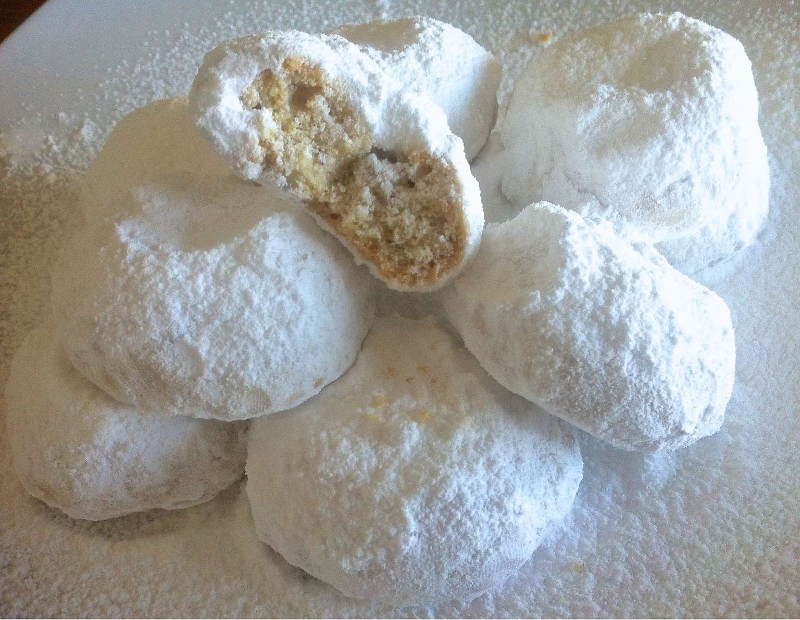

Kourabiedes
Kourabiedes

Description
Kourabiedes (kourambiethes) are traditional Greek Cypriot Christmas almond butter biscuits, packed with the aromas of roasted almonds, fresh butter and rosewater and garnished with luscious layers of icing sugar. They are the ultimate Christmas cookie! Whenever I bake a batch, their incredible aroma spreads through the house and brings back all those wonderful festive memories!
Traditionally, kourambiedes are served during Christmas as part of a Greek Christmas platter, together with melomakarona (Greek Christmas honey cookies), diples (Greek Christmas fried pastry with honey) and of course, during New Years eve, with a slice of delicious Vasilopita (Greek New Years Cake). In some Greek households you will also find kourabiedes served during Easter as well as during engagement parties and weddings. For Greeks they are the ultimate kerasma (treat)!
Ingredients (for 25 pieces)
- 250g butter
- 150g almonds, roughly chopped or almond slivers
- 50g almonds (whole) or almond slivers
- 75g icing sugar
- 1 tbsp rose water
- 1/2 tsp vanilla extract
- 1 tbsp baking powder
- a pinch of salt
- 400g all-purpose (plain) flour
- lots of icing sugar for powdering
Steps
- Preheat the oven to 200C / 390F.
- Place the 150g roughly chopped or slivered almonds on a baking tray, sprinkle with water and bake for 7-8 minutes until roasted. Be careful not to burn them. Set aside in the fridge to cool.
- In a blender, add the raw almonds or the pistachios and blend, until powdered. Set aside.
- In a food processor, add the cold butter and sugar; mix for about 10 seconds, until the butter ‘breaks’ and is completely dissolved.
- Add the powdered almonds, a pinch of salt, the rosewater and the vanilla extract; mix for 10-20 seconds, until combined.
- At the end, add the baking powder and flour and mix again for 10-15 seconds.
- Place the mixture in a large bowl and add the roasted almonds; blend lightly with your hands. For the kourabiedes to remain fluffy, it is important that the butter doesn’t warm up and melt. So wait for a while for the roasted almonds to cool, before adding them to the butter mixture.
- Preheat the oven to 170C / 340F. Layer the bottom of 2 baking trays with parchment paper and form the kourabiedes.
- Roll 1 tbsp (about 30g) of the dough into a ball, place on the baking tray and push with your finger in the middle, to form a little dimple. Continue with the rest of the dough. Place in the fridge for 5 minutes until you prepare your next tray.
- Place the baking trays with the kourabiedes in second and fourth rack of the oven. Bake for approx. 15-20 minutes, until they have a very faint golden tint and are cooked through. Be careful not to overbake them.
- Leave the kourabiedes aside to cool down for a while. If you try to lift them, while still warm, they will break!
- Spray the kourabiedes with rosewater and sift with icing sugar. Enjoy!